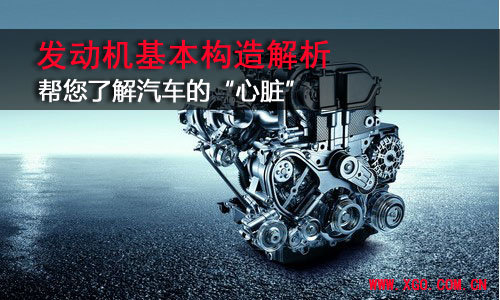

了解汽车的“心脏” 发动机基本构造解析
1发动机的两大机构
[汽车点评网 技术解析] 当我们看到满大街奔跑的汽车就像看到蓝天大地一样自然而然的时候，才感叹世界发展有多快。汽车就这样成为了我们生活中非常重要的一部分，而我们也渐渐的把精力放在眼前这个神奇的工业产物上面。那么，汽车是如何奔跑的呢？

我们知道，汽车的总体构造分为发动机、底盘、车身、电气设备四部分，接下来我们将会系统的一一介绍给大家。最初带给大家的就是汽车的心脏——发动机。感兴趣的朋友们不妨一起了解下。

我们最常见的两种发动机为汽油发动机和柴油发动机，一般而言，汽油机由两大机构和五大系统组成，即曲柄连杆机构，配气机构、燃料供给系统、润滑系统、冷却系统、点火系统和起动系统组成；柴油机两大机构和四大系统组成，即由曲柄连杆机构、配气机构、燃料供给系统、润滑系统、冷却系统和起动系统组成，柴油机是压燃的，不需要点火系统。下面就来简单的认识下这几个部分。
曲柄连杆机构：
曲柄连杆机构是发动机实现工作循环，完成能量转换的主要运动零件。曲柄连杆机构的主要零件可以分为三组，机体组、活塞连杆组和曲轴飞轮组。
我们知道发动机共有进气、压缩、做功、排气四个行程，在做功行程中，曲柄连杆机构将活塞的往复运动转变成曲轴的旋转运动，对外输出动力，而在其他三个行程中，由于惯性作用又把曲轴的旋转运动转变成活塞的往复直线运动。总的来说曲柄连杆机构是发动机借以产生并传递动力的机构。通过它把燃料燃烧后发出的热能转变为机械能。
配气机构：
一般汽车的发动机都采用气门式配气机构，其功用是按照发动机的工作顺序和工作循环的要求，定时开启和关闭各缸的进、排气门，使新气进入气缸，废气从气缸排出。
气门传动组的两种常见形式
气门式配气机构由气门组和气门传动组两部分组成，每组的零件组成则与气门的位置、凸轮轴的位置和气门驱动形式等有关。现代汽车发动机均采用顶置气门，即进、排气门置于气缸盖内，倒挂在气缸顶上。
2发动机的五大系统
燃油供给系统：
正如名字所示，这套系统就是指用来供给可燃混合气的装置。当然由于燃料的不同，供给方式会有所不同。例如汽油供给是根据发动机的要求，配制出一定数量和浓度的混合气，供入气缸，并将燃烧后的废气从气缸内排出到大气中去；而柴油供给是根据发动机的要求，配制出一定数量和浓度的混合气，供入气缸，并将燃烧后的废气从气缸内排出到大气中去。
润滑系统：
我们知道发动机工作时，各运动零件均以一定的力作用在另一个零件上，并且发生高速的相对运动，有了相对运动，零件表面必然要产生摩擦，加速磨损。因此，为了减轻磨损，减小摩擦阻力，延长使用寿命，发动机上都必须有润滑系统。
润滑系统的功用就是在发动机工作时连续不断地把数量足够、温度适当的洁净机油输送到全部传动件的摩擦表面，并在摩擦表面之间形成油膜，实现液体摩擦，从而减小摩擦阻力、降低功率消耗、减轻机件磨损，以达到提高发动机工作可靠性和耐久性的目的。润滑方式有压力润滑、飞溅润滑、润滑脂润滑三种方式。
冷却系统：
冷却系的主要功用是把受热零件吸收的部分热量及时散发出去，保证发动机在最适宜的温度状态下工作。冷却系按照冷却介质不同可以分为风冷和水冷，如果把发动机中高温零件的热量直接散入大气而进行冷却的装置称为风冷系。而把这些热量先传给冷却水，然后再散入大气而进行冷却的装置称为水冷系。由于水冷系冷却均匀，效果好，而且发动机运转噪音小，目前汽车发动机上广泛采用的是水冷系。
起动系统：
为了使静止的发动机进入工作状态，必须先用外力转动发动机曲轴，使活塞开始上下运动，气缸内吸入可燃混合气，然后依次进入后续的工作循环。而依靠的这个外力系统就是启动系统。
目前几乎所有的汽车发动机都采用电力起动机启动。当电动机轴上的驱动齿轮与发动机飞轮周缘上的环齿啮合时，电动机旋转时产生的电磁转矩通过飞轮传递给发动机的曲轴，使发动机起动。电力起动机简称起动机。它以蓄电池为电源，结构简单、操作方便、起动迅速可靠。
点火系统：
汽油发动机的点火系统
这是汽油发动机比柴油发动机多出的一套系统，气缸在压缩行程将要结束的时候，即将进入的就是做功行程。这时候就需要有一个点火系统来适时、准确、可靠的点燃已经配好的可燃混合燃料，使发动机作功。
3常见汽车参数介绍
介绍完了发动机的基本构造，我们顺便来了解一下发动机的参数。比较常见的有排量、压缩比、升功率、最大功率、最大扭矩、最大马力等等，它们分别代表什么呢？
排量：排量代表的是所有气缸工作容积的总和，我们知道每一个气缸都是有上止点和下止点的，而上下止点之间的容积就是气缸的工作容积，排量就等于汽缸数和汽缸容积的总和。
最大功率：功率在物理上面的意义是单位时间内做的功，发动机的输出功率同转速关系很大，随着转速的增加，发动机的功率也相应提高，但是到了一定的转速以后，功率反而呈下降趋势，因此会出现一个峰值，这个峰值就是发动机的最大功率，它主要取决于发动机气缸排量的大小，燃烧的燃料量和发动机的转速。
最大马力：马力和功率其实是同一个事物，只不过传统上人们喜欢用马力为单位表达功率，字母为PS。不过现在也会出现千瓦（KW）值。它们之间的换算关系如下：1PS=0.735kW。
升功率：是评价发动机性能的一个重要指标，它代表的是每升气缸工作容积所发出的功率，它反映了发动机的技术水平。升功率越大，发动机的重量利用率就越高，相对而言发动机就越小，材料也就越省。它的单位是kW/l，而我们常规计算方法就是用最大功率除它的气缸工作容积。
最大扭矩：它指的是发动机运转时从曲轴端输出的最大力矩，汽车的驱动力和它是息息相关的。扭矩越大，发动机输出的“劲”越大，汽车的爬坡能力、起步速度和加速性也越好。最大扭矩只存在于某个转速或某个转速区间内，这个区间就是在标出最大扭矩时给出的转速或转速区间。最大扭矩一般出现在发动机的中、低转速的范围，随着转速的提高，扭矩反而会下降。扭矩的单位是牛顿·米（N·m）。
编辑点评：
今天对于发动机的基本构造和常见参数做了介绍，有基础才能拓展延伸，之后我们将会针对发动机气缸的排量方式，配气机构、以及增压系统做一个详细的介绍，敬请期待。（文/汽车点评网 张丹）